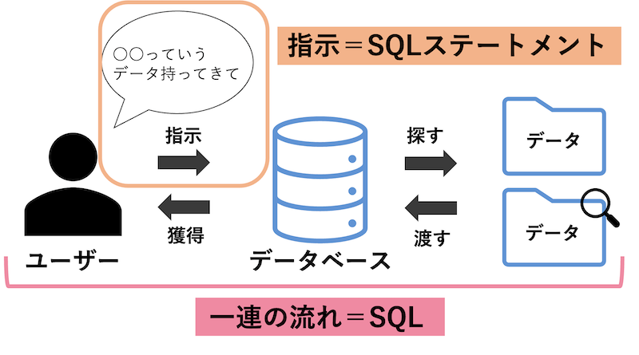

SQLとは
リレーショナルデータベース(注1)に情報を格納および処理するためのプログラミング言語です。
リレーショナルデータベースは、情報を表形式で格納します。
行と列は、さまざまなデータ属性と、データ値間のさまざまな関係を表します。
SQL ステートメント(注2)を使用して、データベース(注3)から情報を
格納、更新、削除、検索、および取得できます。
SQL を使用して、データベースのパフォーマンスを維持したり最適化したりすることもできます。
(注1)リレーショナルデータベース：データを「行（レコード）」と「列（カラム）」
からなる表（テーブル）の形式で管理し、複数の表同士を関連付けて扱うデータベースのこと
(注2)SQLステートメント：リレーショナルデータベースに対してデータの
検索、追加、更新、削除などの命令を出すために記述する「SQL文」全体のこと
(注3)データベース：特定のルールに従って整理・蓄積されたデータの集まり
用途
大量のデータから必要な情報を瞬時に検索・抽出し、
データの追加・更新・削除などを効率的に行うために使用されます。
(例)Webサイト・アプリの運営：SNSやECサイトにおいて、
ユーザーアカウント情報、商品カタログ、投稿データなどをデータベースから呼び出し、画面に表示する
仕組み
